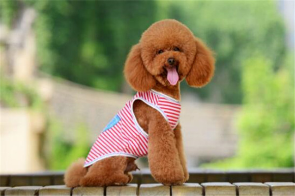

-

泰迪
所谓的“泰迪”，即指“泰迪熊式”贵宾犬，它只是贵宾犬的一种毛发修剪形式。贵宾犬根据体型大小被分为4类，最受欢迎的是体型较小的品种：迷你贵宾犬和玩具贵宾犬。其中，玩具贵宾犬是体型最小的一种，个性好动、欢快、非常机警、聪明、喜欢外出、性格脾气好、适应力强。有商人特意将贵宾犬修剪成时下流行的“泰迪熊”模样，所以这样的贵宾犬后来又被叫泰迪犬。在实际情况中，必须是能修剪成泰迪熊式、而且修剪成型后看上去像熊仔玩具一样可爱的贵宾犬才能叫泰迪。
了解更多 -

哈士奇
西伯利亚雪橇犬（俄语：Сибирский хаски，英语：Siberian Husky），常见别名哈士奇，昵称为二哈。 西伯利亚雪橇犬是原始的古老犬种，主要生活在西伯利亚东北部、格陵兰南部。哈士奇名字是源自其独特的嘶哑叫声 [1] 。哈士奇性格多变，有的极端胆小，也有的极端暴力，进入人类社会和家庭的哈士奇，都已经没有了这种极端的性格，比较温顺，是一种流行于全球的宠物犬。哈士奇、金毛犬与拉布拉多并列为三大无攻击性犬类 [2] ，被世界各地人们广泛饲养，并在全球范围内有大量该犬种的赛事。
-
金毛寻回犬
金毛寻回犬（Golden Retriever）是单猎犬，比较流行的狗的品种。在猎捕野禽的寻回犬中培养出来的，游泳的续航力极佳。 金毛寻回犬是最常见的家犬之一，它很容易养，有耐心并且对主人要求不多，只要定期运动，饲喂食物和兽医体检就可以了。它属于匀称、有力、活泼的一个犬种，特征是稳固、身体各部位配合合理，腿既不太长也不笨拙，表情友善，个性热情、机警、自信而且不怕生，性格讨人喜欢。金毛寻回犬最早是一种寻回猎犬，大多作为导盲犬与宠物狗。对小孩子或者婴儿十分友善。金毛寻回犬是位列世界犬种智商排行的第四名。
-
比熊
比熊犬（法语：Bichon Frisé，意指“白色卷毛的玩赏用小狗”）原产于地中海地区，是一种小型犬品种。它们不会自然脱毛，因此毛发需要整理。颜色一般白色。原称巴比熊犬，后缩为比熊犬。怀疑是巴比特犬和水猎融犬的后裔。是一种娇小的、强健的白色粉扑型的狗，具有欢快的性格，从它羽毛般欢快地卷在背后的尾巴和好奇的眼神中就能体现出来。比熊犬原称巴比熊犬，后缩为比熊犬。怀疑是巴比特犬和水猎融犬的后裔。
-

博美
博美是一种紧凑、短背、活跃的玩赏犬，学名哈多利系博美犬（俗称英系博美犬），是德国狐狸犬的一种，原产德国。它拥有柔软、浓密的底毛和粗硬的皮毛。尾根位置很高，长有浓密饰毛的尾巴卷放在背上。它具有警惕的性格、聪明的表情、轻快的举止和好奇的天性。体型小巧可爱，适合当伴侣犬，白色和棕色的居多。德国狐狸犬，包括荷兰毛狮犬，大型狐狸犬，中型狐狸犬，小型狐狸犬和松鼠犬（也就是博美犬），同时也是很有竞争力的比赛犬。其毛色有白、偏黄奶油、花色、黑、红、棕等。
-
雪纳瑞
雪纳瑞共有三个品种：大型、标准型、小型三种。 原产地为德国。体长等于身高，呈正方形体型。被毛浓密粗硬，毛色有黑色和胡椒色，脸部毛稍短。耳小呈V字形，向前边垂下。嘴边长有胡髭。眼大小适中，呈暗色。胸宽深，臀强硬，腹上收。前肢直立，后肢宽阔结实，断尾，擎起 。雪纳瑞，其名字源自德语“Schnauze”，就是“大胡子”的意思。而该犬的确有着一团像草堆般的大胡子，再加之憨厚的长脸孔和一双满溢热情及盼望的大眼睛，深受各国犬迷的喜爱。